This lab uses Google Maps to explore and use geographical data sets. This lab can be done in pairs with no restrictions on who is in a pair. You can do it solo if you wish. Pairs are not required.
Google My Maps requires a Google account and can be accessed at: https://www.google.com/maps/d/u/. There is detailed documentation as well as a video introduction available.
Start by going to Google My Maps and clicking "Create a new map".
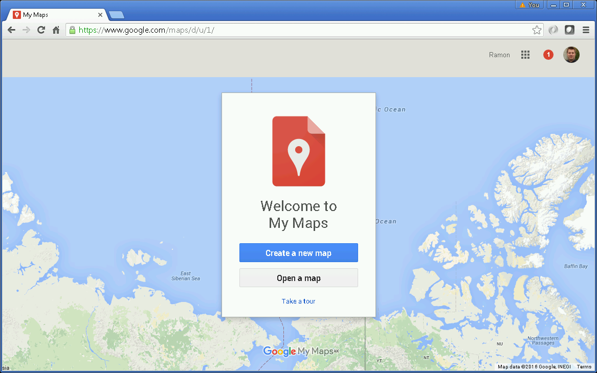Click on the "Untitled map" and give the map a title of "DATA 301 - Lab 9 - (your name)". If you have a partner, please put the partner's name in the map title as well.
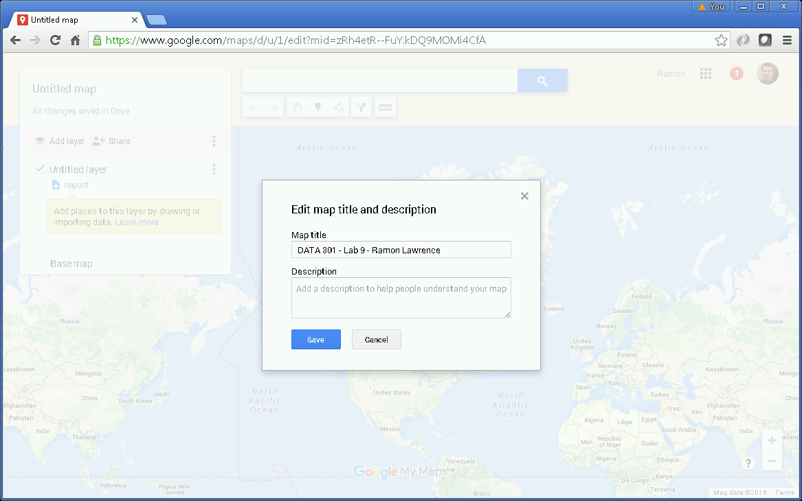Click on the "Untitled layer" and rename as "Places".
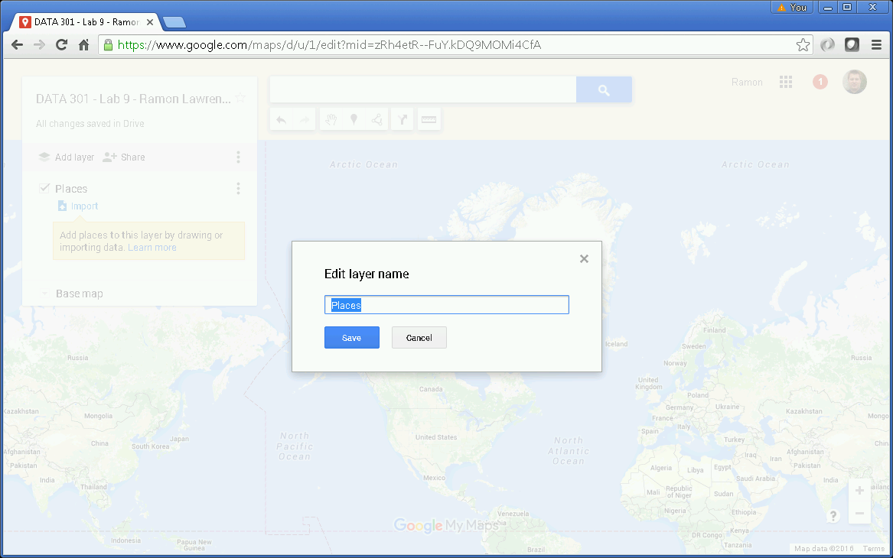Add markers on the map by searching for a location and then selecting add to map. For each marker, you can change the marker by clicking on style button and add an image by clicking on image button.
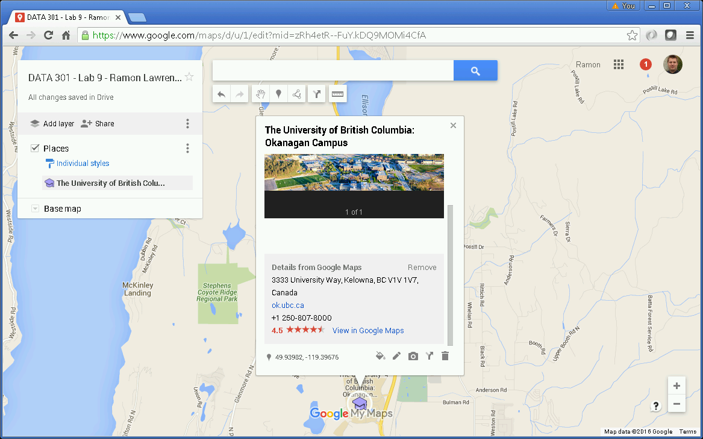Add the following markers:
Add a layer by clicking on the Add layer button. Name the layer "Tim Hortons". Import the data from timhortons.csv selecting Location field for the location and the Restaurant Name for the marker title. Change the marker to look like coffee icon.
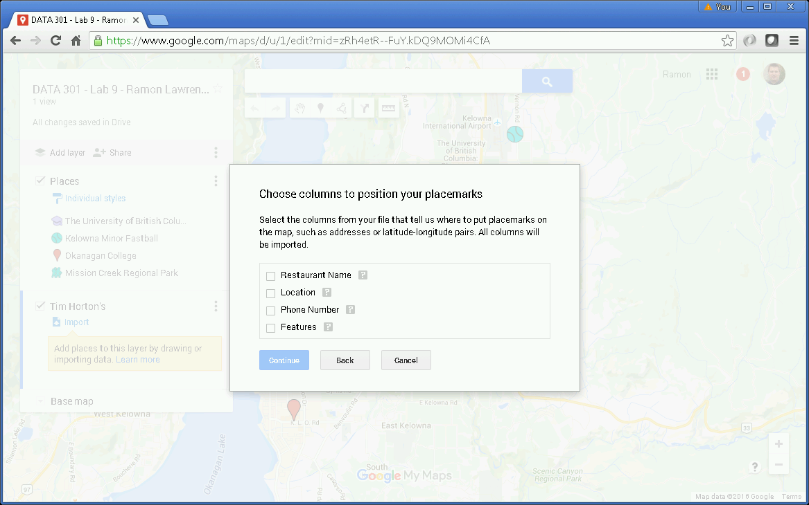 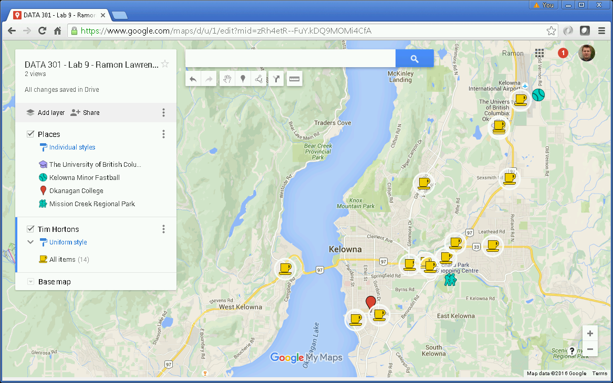Add a layer called "Parks" by importing the KML file from the City of Kelowna. There are also lots of other City of Kelowna open data sets.
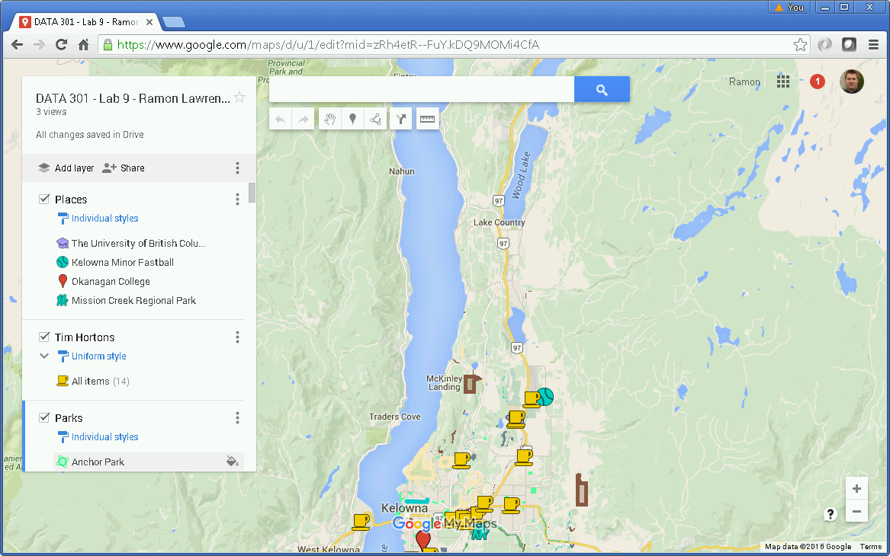Add a driving route between UBC Okanagan and High Noon Park.
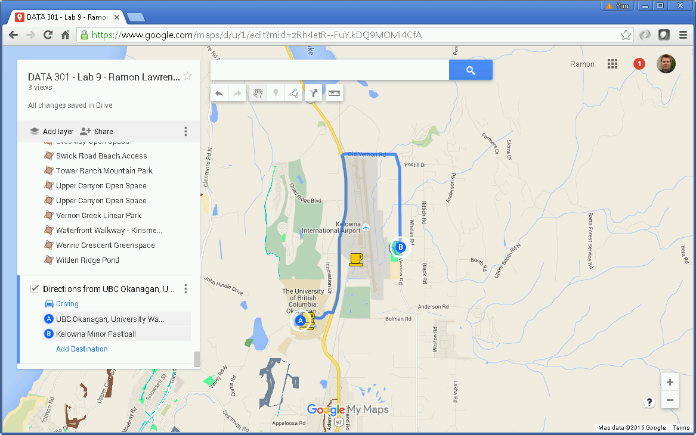Add a bike route between Okanagan College and UBC Okanagan. If you know a better route, put that one on! You can manually add a bike route one section at a time.
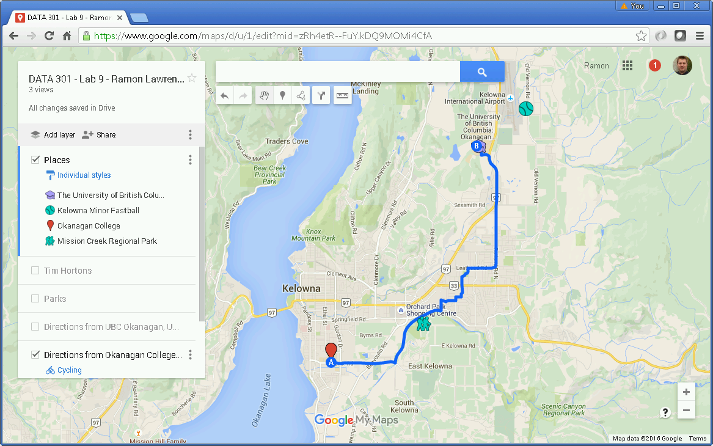Add an area highlighting the artificial turf soccer field at UBC Okanagan. Make sure it is in the Places layer.
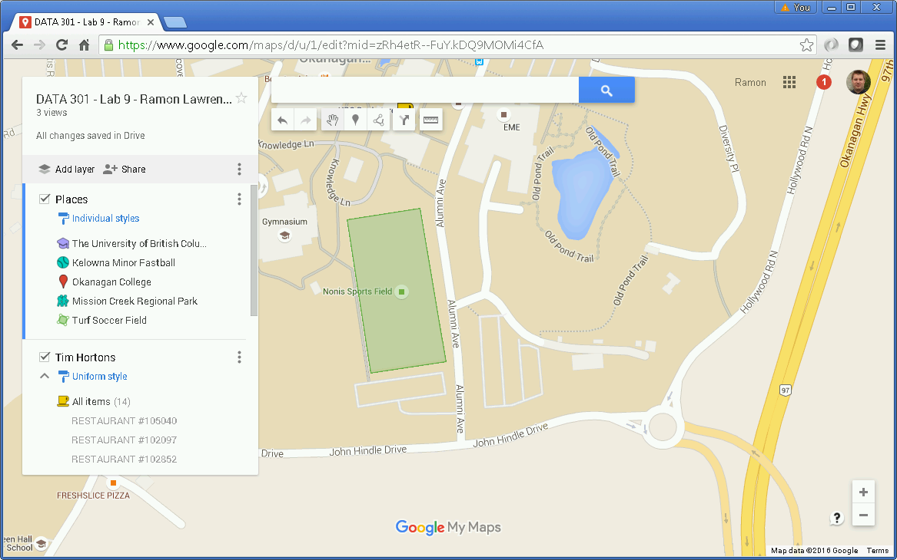Change the base map to satellite view.
Add a line showing the new John Hindle Drive. Official road plan
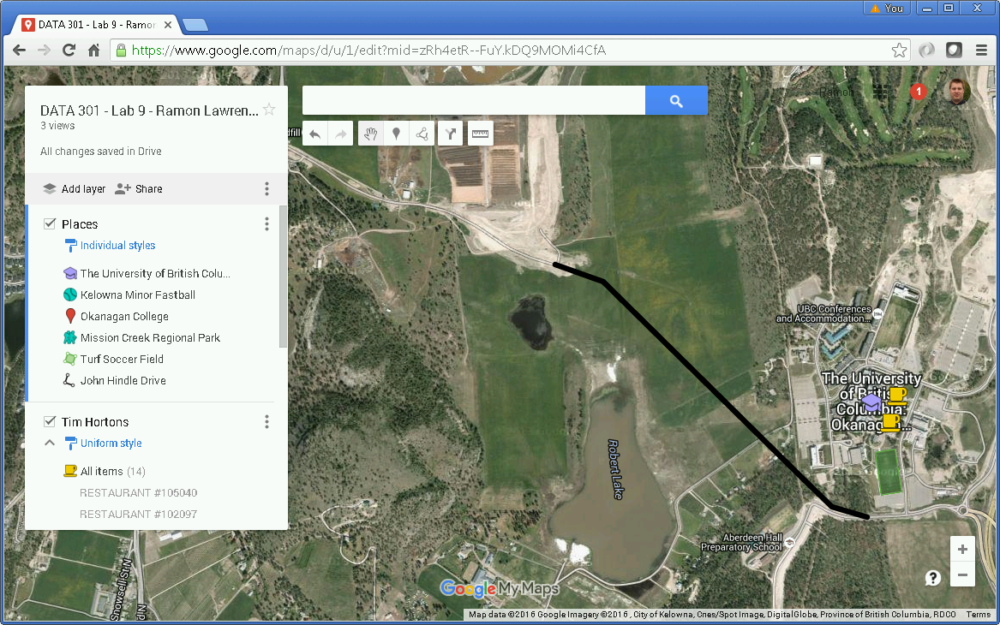Other fun things:
Create a Python program that requests five locations and uses the Google Maps API to geocode those locations and calculate the total driving path between them. Use the sample Python code to get started. Remember that you will need to get a Google API key at: https://developers.google.com/maps/documentation/directions/get-api-key. The locations are:
Enter a location: UBC Okanagan
Enter a location: Seattle
Enter a location: Disneyland
Enter a location: Grand Canyon
Enter a location: Las Vegas
Your road trip route:
UBC Okanagan ({'lng': -119.3950403, 'lat': 49.9392291})
Distance to stop: 512 km Distance travelled so far: 512 km
Seattle ({'lng': -122.3320708, 'lat': 47.6062095})
Distance to stop: 1869 km Distance travelled so far: 2381 km
Disneyland ({'lng': -117.9155416, 'lat': 33.8097419})
Distance to stop: 783 km Distance travelled so far: 3164 km
Grand Canyon ({'lng': -112.1401108, 'lat': 36.0544445})
Distance to stop: 445 km Distance travelled so far: 3609 km
Las Vegas ({'lng': -115.1728497, 'lat': 36.1147074})
Total distance: 3609 km
When complete, submit your public map URL using Connect as well as a description of any bonus features you added. To make a map public, click "Share" then "Change.." beside Private and select "On - Public on the web". Submit question 2 by uploading your Python file.
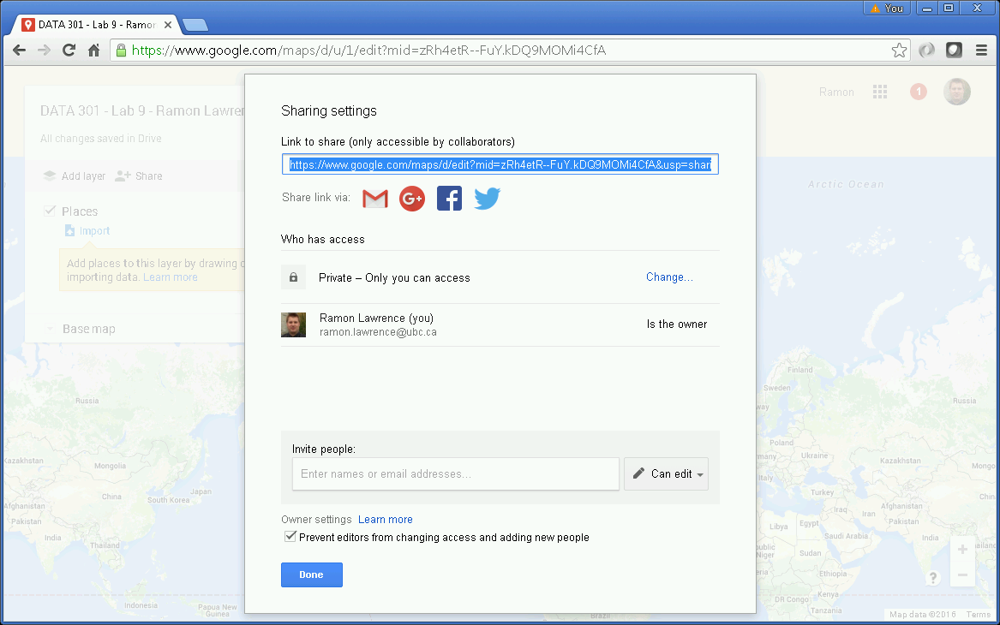 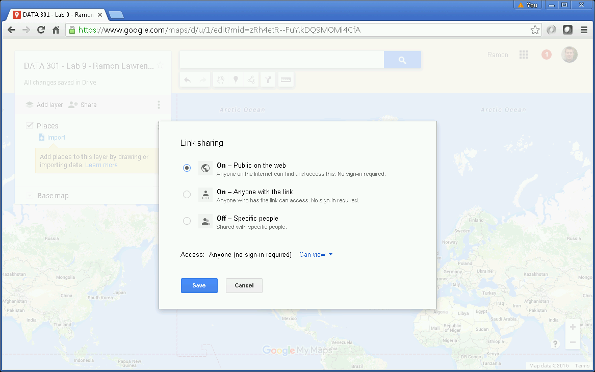